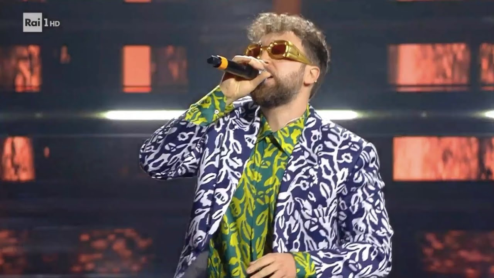

1.
Simone Cristicchi - "Abbi cura di me" (Sanremo 2019)
Voto: 8
Il brano è stato presentato al 69º Festival di Sanremo, classificandosi al quinto posto ma vincendo il premio Endrigo alla miglior interpretazione e il premio Bigazzi per la composizione musicale.
Il cantautore dice: "Ho raccontato le fragilità dell'essere umano e la bellezza del mostrare la propria debolezza perché quando togliamo la corazza siamo reali, siamo veri, e quindi, siamo più belli. Abbi cura di me è una dichiarazione di aiuto. Ognuno la può dedicare a chi vuole. [...] Viviamo in un momento di sgretolamento generale dei valori, tornare a parlare dell'amore universale, di un amore puro che non chiede niente in cambio, occuparsi anche solo di una persona nella vita, può salvare, il mondo."
Clicca qui per il videoclip del brano
Chapeau.
2.
Tosca - "Ho amato tutto" (Sanremo 2020)
Voto: 9-
Il brano, scritto, prodotto e arrangiato da Pietro Cantarelli, è stato presentato al Festival di Sanremo 2020, dove si è classificato al sesto posto, vincendo il Giancarlo Bigazzi per la miglior composizione musicale e il premio Nilla Pizzi per la interpretazione.
Grazie alla sue doti interpretative, Tosca ci regala una perla che non ha avuto grande seguito, ma che ha avuto un posto nei miei ricordi.
Clicca qui per il videoclip del brano
Eccellente.
3.
La Rappresentante Di Lista - "Amare" (Sanremo 2021)
Voto: 8
Il brano ha partecipato in gara nella sezione Campioni al Festival di Sanremo 2021, si è piazzato all'undicesimo posto nella classifica finale.
In un'intervista realizzata per RaiPlay, il gruppo ha descritto il proprio brano come «una canzone che parla di corpi, di vita, di comunità, della ricerca di una rinascita, di un senso di libertà e d'amore». Il gruppo ha poi aggiunto che «Amare è una canzone emozionante, una canzone appassionata e parla di rinascita.
Ha avuto una gestazione molto lunga e ha trovato la sua forma espressiva ultima insieme a Dardust, con la sua produzione».
Clicca qui per il videoclip del brano
Una canzone che sprizza libertà.
4.
Dargen D'Amico - "Dove si balla" (Sanremo 2022)
Voto: 9
Si tratta di una canzone dance pop ispirata alle sonorità eurodance e italo dance degli anni novanta, caratterizzata anche da sonorità techno.
Ha raggiunto la 4ª posizione delle classifiche radiofoniche e la nona posizione nella classifica finale di quell'edizione di Sanremo.
Dove si balla è stata sicuramente la canzone giusta al momento giusto: dopo un anno in cui il mondo è stato stravolto da una pandemia, finalmente
l'edizione del 2022 di Sanremo riporta il pubblico all'Ariston e l'artista riesce benissimo a celebrare la rinascita da quel periodo buio che è stato quello
della pandemia, riuscendo a far ballare tutto l'Ariston e lasciando una risata un po' malinconica sul viso di tutti gli ascoltatori.
Clicca qui per il videoclip del brano
Iconico.
5.
Olly - "Polvere" (Sanremo 2023)
Voto: 9/
Brano classificatosi al ventiquattresimo posto nella classifica finale, è sicuramente un singolo molto sottovalutato come lo è anche Olly.
Artista arrivato direttamente da Sanremo Giovani, molto probabilmente anche per questo non molto apprezzato dal grande pubblico, è riuscito a
conquistarmi col suo farsetto e i suoi balletti iconici. La canzone è pensata per far ballare il suo pubblico e per portare un po' di gioia sul
palco dell'Ariston e, sicuramente, l'intento dell'artista è riuscito perfettamente, nonostante in quest'ultima edizione si sia dovuto confrontare
con artisti di calibro molto più grande del suo è riuscito a conquistarmi e ad avere un posto nella mia classifica personale di Sanremo 2023. Il mio preferito.
Clicca qui per il videoclip del brano
Ottima cassa dritta.